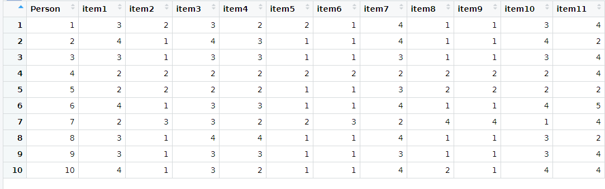

4 Datenmanagement I
4.1 Daten importieren
4.1.1 Organisation der Dateien
- Empfehlung: Einen Ordner für alle Datendateien innerhalb des Projektordners (bspw. Data)

4.1.2 Exkurs: Dateipfade
Beispiel für den Dateipfad einer beliebigen Datendatei Daten.txt (lässt sich aus den Eigenschaften einer Datei entnehmen):
D:\Dokumente\Kurse\Rintensiv\Projektordner\data
- Wenn nur vom Projektordner aus navigiert werden muss, dann entfällt bei der Pfadangabe der ganze Teil vor data (relative Pfadangabe)
Wichtig: R nutzt Backslash “\” zu anderen Zwecken, daher muss ein normaler Slash “/” genutzt werden
Die Pfadangabe für Daten.txt würde also so aussehen: data/Daten.txt
4.1.3 Daten aus .txt, .csv, .xlsx und weiteren Dateiformaten auslesen
- Dateipfad immer in ““ angeben
- Navigieren innerhalb des Projektordners (Vorteil: keine vollständigen Dateipfade müssen angegeben werden)
- header (default: TRUE) nimmt die erste Zeile als Variablennamen
- sep (default: ““) legt fest wie die Spalten in der Ursprungsdatei getrennt sind
- dec legt fest welches Zeichen zur Dezimaltrennung genutzt wird
Befehl für .csv Dateien
Befehl für .xlsx Dateien
## Benötigtest Package installieren und aktivieren
install.packages("xlsx")
library(xlsx)
## Datensatz einlesen
Dataset <- read.xlsx("data/Daten.xlsx")Befehl für .sav Dateien (SPSS)
4.2 Daten importieren
Vorschau mit allen Argumenten, die auch im read.table() enthalten sind:

Eingabe in die Konsole:
Vorteil:
- automatisch richtiger Befehl
- Vorschau
Nachteil
- Kompletter Dateipfad angegeben, nicht brauchbar für andere
4.2.1 Überblick verschaffen
- str() gibt die Struktur des Dataframes aus
str(Dataset)
'data.frame': 10 obs. of 12 variables:
$ Person: int 1 2 3 4 5 6 7 8 9 10
$ item1 : int 3 4 3 2 2 4 2 3 3 4
$ item2 : int 2 1 1 2 2 1 3 1 1 1
$ item3 : int 3 4 3 2 2 3 3 4 3 3
$ item4 : int 2 3 3 2 2 3 2 4 3 2
$ item5 : int 2 1 1 2 1 1 2 1 1 1
$ item6 : int 1 1 1 2 1 1 3 1 1 1
$ item7 : int 4 4 3 2 3 4 2 4 3 4
$ item8 : int 1 1 1 2 2 1 4 1 1 2
$ item9 : int 1 1 1 2 2 1 4 1 1 1
$ item10: int 3 4 3 2 2 4 1 3 3 4
$ item11: int 4 2 4 4 2 5 4 2 4 4dim() gibt die Dimensionen (Zeilen und Spalten) einer Matrix an
head() zeigt die ersten n Zeilen anzeigen
head(Dataset, 2)
Person item1 item2 item3 item4 item5 item6 item7 item8
1 1 3 2 3 2 2 1 4 1
2 2 4 1 4 3 1 1 4 1
item9 item10 item11
1 1 3 4
2 1 4 2View(Dataset) öffnet eine Ansicht ähnlich zu Excel (View groß geschrieben!)

names() gibt die Variablennamen des Datensatzes aus
names(Dataset)
[1] "Person" "item1" "item2" "item3" "item4" "item5"
[7] "item6" "item7" "item8" "item9" "item10" "item11"Damit lassen sich auch Namen von Variablen im Datenesatz verändern
4.3 Daten speichern
4.3.1 Datensatz exportieren als .txt, .csv, .xlsx oder .sav
- Befehl: write.table(data, file = “Daten.txt”, sep = “…”, row.names = TRUE, col.names = TRUE)
- Argumente
- data: Welcher Dataframe soll exportiert werden
- file: Name der neuen Datei (.txt am ende nicht Vergessen!)
- sep, dec: Wie bei read.table
- row.names: Zeilennummerierung als eigene Spalte
- col.names: Variablennamen als erste Zeile speichern
Genauso wie bei den read()- Funktionen gibt es auch
- write.csv2() für .csv Dateien
- write.xlsx() für .xlsx Dateien (Package “xlsx” benötigt)
- write_sav() für .sav Dateien (Package “haven” benötigt)
Wenn beispielsweise: file = “Unterordner/exportierteDatei.txt”**, dann im Unterodner. Wenn kein Pfad angegeben wird, dann liegt die Datei im Projektordner.
4.4 Datensätze zusammenfügen
4.4.1 Fälle hinzufügen
- Situation: Es wurde eine weitere Erhebung mit anderen Personen durchgeführt, in der die gleichen Items abgefragt wurden
Dataset1 <- read.table("data/Daten.txt", header = TRUE)
head(Dataset1,2)
Person item1 item2 item3 item4 item5 item6 item7 item8
1 1 3 2 3 2 2 1 4 1
2 2 4 1 4 3 1 1 4 1
item9 item10 item11
1 1 3 4
2 1 4 2Dataset2 <- read.table("data/Daten_2.txt", header = TRUE)
head(Dataset2,2)
Person item1 item2 item3 item4 item5 item6 item7 item8
1 11 5 3 5 3 2 6 4 4
2 12 3 5 2 3 5 3 3 2
item9 item10 item11
1 3 3 4
2 6 4 6- mit rbind() lassen sich Daten (Vektoren, Matrizen, Dataframes) zeilenweise (reihenweise) zusammenfügen (rbind = rowbind)
- es können unendlich viele Datensätze in diesem Befehl zusammengefügt werden
- Überprüfung
Bedingungen
- Die Datasets haben die gleiche Anzahl an Spalten
- Die Datasets haben die gleichen Namen für die Variablen
4.4.2 Variablen hinzufügen**
- Situation: Innerhalb der Erhebung gab es noch eine Abfrage von weiteren Items
Dataset1 <- read.table("data/Daten.txt", header = TRUE)
head(Dataset1,2)
Person item1 item2 item3 item4 item5 item6 item7 item8
1 1 3 2 3 2 2 1 4 1
2 2 4 1 4 3 1 1 4 1
item9 item10 item11
1 1 3 4
2 1 4 2Dataset3 <- Dataset3 <- read.table("data/Daten_FB2.txt", header= TRUE)
head(Dataset3,2)
Person item12 item13 item14 item15 item16 item17 item18
1 1 5 3 5 3 2 6 4
2 2 3 5 2 3 5 3 3
item19 item20 item21 item22
1 4 3 3 4
2 2 6 4 6- Mit cbind() lassen sich Daten (Vektoren, Matrizen, Dataframes) spaltenweise zusammenfügen (cbind = columbind)
- Überprüfung
Datensätze müssen gleiche Anzahl an Zeilen haben
Datensätze müssen gleich sortiert sein
Situation: Innerhalb der Erhebung gab es noch eine Abfrage von weiteren Items, allerdings fehlt eine Person \(\rightarrow\) cbind()} führt nicht zum gewünschten Ergebnis
Dataset1 <- read.table("data/Daten.txt", header = TRUE)
head(Dataset1,2)
Person item1 item2 item3 item4 item5 item6 item7 item8
1 1 3 2 3 2 2 1 4 1
2 2 4 1 4 3 1 1 4 1
item9 item10 item11
1 1 3 4
2 1 4 2Dataset4 <- read.table("data/Daten_FB2_NA.txt", header= TRUE)
head(Dataset4,2)
Person item12 item13 item14 item15 item16 item17 item18
1 1 5 3 5 3 2 6 4
3 3 4 4 5 5 2 3 3
item19 item20 item21 item22
1 4 3 3 4
3 3 5 7 5Mit merge(…, …, by=“…“) lassen sich Daten (Vektoren, Matrizen, Dataframes) spaltenweise besser zusammenfügen
Anhand einer Schlüsselvariablen (by) können zusammengehörige Fälle erkannt werden
by: Welche Variable ist die Schlüsselvariable?
by.x, by.y: wie by, aber separate Angabe pro Datensatz
all: Alle Fälle behalten (TRUE) oder nur die in beiden Datensätzen vorhandenen (FALSE)
all.x, all.y: wie all, aber nur für einen der Datensätze
sort: Neu nach Schlüsselvariable sortieren? (TRUE = ja)
all = FALSE: Nur die Fälle werden behalten, die in beiden Datensätzen vorhanden sind
New_Dataset3 <- merge(Dataset1, Dataset4, by = "Person", all = FALSE)
head(New_Dataset3,2)
Person item1 item2 item3 item4 item5 item6 item7 item8
1 1 3 2 3 2 2 1 4 1
2 3 3 1 3 3 1 1 3 1
item9 item10 item11 item12 item13 item14 item15 item16
1 1 3 4 5 3 5 3 2
2 1 3 4 4 4 5 5 2
item17 item18 item19 item20 item21 item22
1 6 4 4 3 3 4
2 3 3 3 5 7 5–> Person 2 wird raus-gefiltert für alle restlichen Personen werden die neuen Variablen übernommen
- all = TRUE: Alle Fälle werden beibehalten, fehlende Werte werden durch NA ergänzt
New_Dataset3 <- merge(Dataset1, Dataset4, by = "Person", all = TRUE)
head(New_Dataset3,2)
Person item1 item2 item3 item4 item5 item6 item7 item8
1 1 3 2 3 2 2 1 4 1
2 2 4 1 4 3 1 1 4 1
item9 item10 item11 item12 item13 item14 item15 item16
1 1 3 4 5 3 5 3 2
2 1 4 2 NA NA NA NA NA
item17 item18 item19 item20 item21 item22
1 6 4 4 3 3 4
2 NA NA NA NA NA NA–> Person 2 bleibt erhalten. Die nicht vorhandenen VAriablen werden mit NA gefüllt